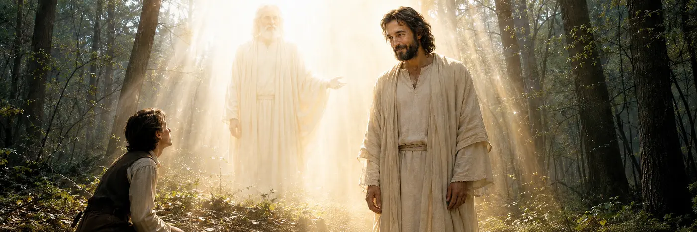
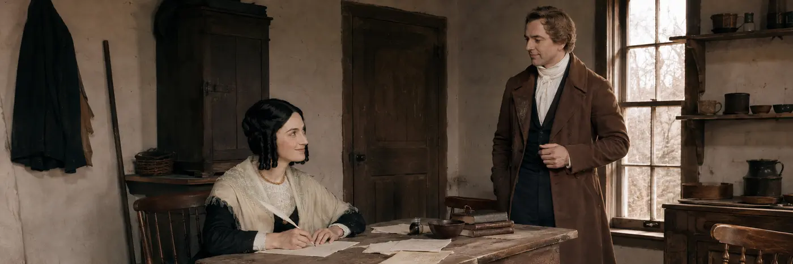
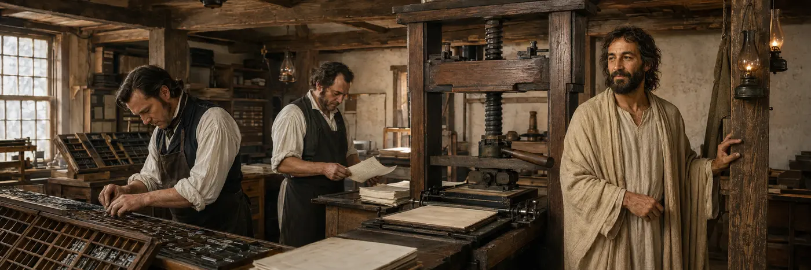
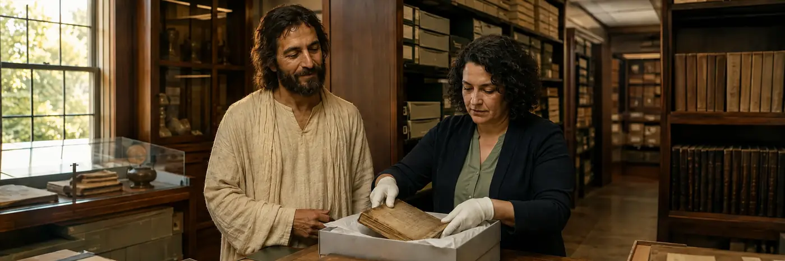
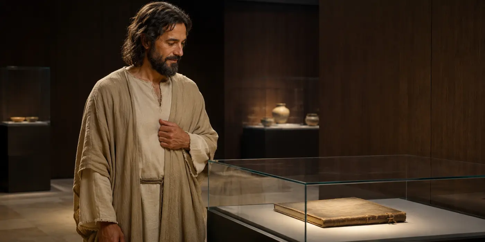
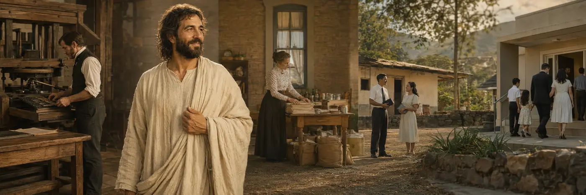

Official sources first
Church History
Explore the Restoration and the history of The Church of Jesus Christ of Latter-day Saints through the Church's current history resources. On this page, official Church History materials and the Saints history are the governing source path for historical questions.

The First Vision
Begin with Joseph Smith's accounts of the experience that opened the Restoration, then follow the official historical sources as the story unfolds.
Source-grounded study assistant
Ask Church History
Ask naturally. The assistant predicts the likely historical source family, adds verified official study routes, remembers the current conversation for follow-up questions, and keeps official Church History and Saints above model memory.
AI-assisted answers are study aids and may contain errors. Unreviewed questions and limited recent context may be sent to external AI providers for research and verification. Please do not submit sensitive personal information.

Joseph and Emma at Harmony
The history of the Restoration includes quiet days of writing, supporting, questioning, and continuing with faith.
The current narrative history
Read Saints Across Four Eras
The Church's Saints series currently presents the history from the early Restoration through 2020 in four volumes. Use the era cards as the primary narrative path, then move into topic-specific Church History sources when a question needs closer examination.
The Three Witnesses
Oliver Cowdery, David Whitmer, and Martin Harris gave their names and testimony to the Book of Mormon record.
The Standard of Truth
Early Restoration, Joseph Smith, the rise of the Church, Kirtland, Missouri, Nauvoo, and the opening of the westward exodus.
Read on ChurchofJesusChrist.org → Volume 2 1846–1893No Unhallowed Hand
The pioneer era, settlement and global gathering, conflict and change, temples, plural marriage, and the closing decades of the nineteenth century.
Read on ChurchofJesusChrist.org → Volume 3 1893–1955Boldly, Nobly, and Independent
A changing worldwide Church through modernization, two world wars, new institutions, growing missions, and expanding international membership.
Read on ChurchofJesusChrist.org → Volume 4 1955–2020Sounded in Every Ear
The increasingly global Church, worldwide growth, temples, missionary expansion, institutional change, and the modern era through 2020.
Read on ChurchofJesusChrist.org →
The Restoration Print Shop
The translated record moved into print, where ordinary labor helped carry its witness to readers and generations beyond.

Preserving the Record
Careful preservation keeps journals, documents, photographs, and other records available for responsible historical study.
Verified official index
Go Deeper by Source Type
The official Church History hub brings together narrative history, topic studies, primary-vision resources, women's history, historical podcasts, essays, question-based videos, and global histories. These routes are indexed into the history assistant above and remain available here for deeper study.
Church History Topics
Use the A–Z topic collection for people, events, practices, places, controversies, organizations, and historical developments.
First Vision
Study Joseph Smith's First Vision through the Church's dedicated historical resources and accounts.
Women's History
Explore women, organizations, experiences, and contributions across Latter-day Saint history.
Joseph Smith Papers Podcasts
Continue into Church-hosted historical podcast series connected with Joseph Smith-era documents and events.
Gospel Topics Essays
Use the Church's in-depth essays when a historical question intersects with doctrine, practice, or complex historical context.
Answers to Church History Questions
Follow concise Church-produced answers on frequently asked historical questions and sensitive subjects.
Global Histories
Study how the Church developed in countries and communities around the world rather than viewing history only through the American West.
Saints Library
Open all four Saints volumes together with Saints Stories and the Saints podcast from the official history library.

History Preserved for Future Generations
Historical records invite each generation to look carefully, study faithfully, and keep Jesus Christ at the center of the story.

Jesus Christ Across Generations
Across periods, places, and people, the purpose of studying Church history is to understand the Restoration and draw closer to Jesus Christ.
Continue the journey
History, Pioneer Experience, and Open Study
Pioneer Faith & History
Move from the wider Church history record into the interactive pioneer journey, trail, and handcart experience.
Ask Beyond History
Use the broader Ask experience for scripture, doctrine, belief, personal study, or general questions.
Permanent Answers
Continue into indexed focusChrist answer pages with official study paths and related topics.